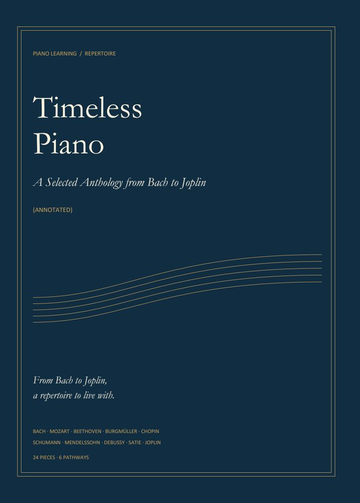

Timeless Piano (Annotated)
A Selected Anthology from Bach to Joplin
바흐부터 조플린까지 피아노 작품 24곡. 곡마다 무엇을 들을지, 어떻게 연습할지, 작은 워크숍과 마지막 질문을 담은 오리지널 학습 노트가 앞에 있습니다. 보면대에 펼쳐 두는 책입니다.
- 쉬운 연습곡부터 연주회 레퍼토리까지 24곡
- 모든 곡에 오리지널 학습 노트
- 6가지 주제별 경로와 모든 악보의 출처
Bach · Mozart · Burgmüller · Beethoven · Chopin · Schumann · Mendelssohn · Debussy · Satie · Joplin
114쪽 · 무광 하드커버 · 큰 판형 21 × 28 cm · ISBN 9798143206588
다른 스토어: Amazon.de · Amazon.fr · Amazon.it · Amazon.es · Amazon.nl · Amazon.pl · Amazon.se · Amazon.com.be · Amazon.ie